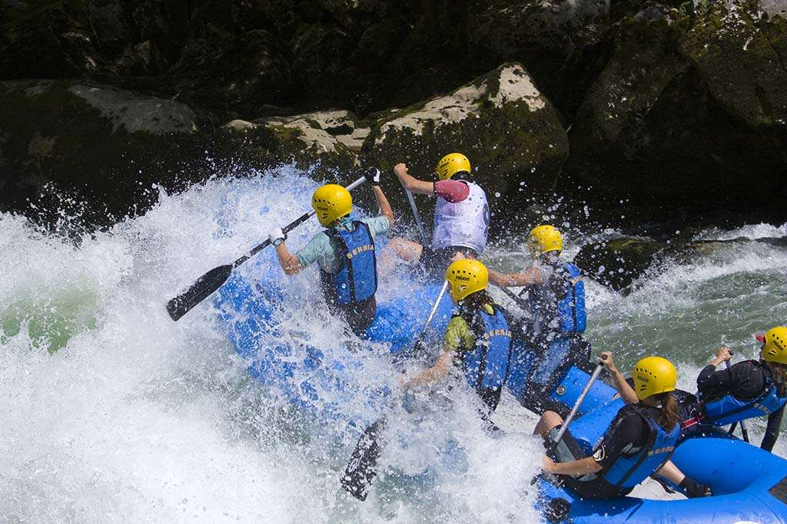
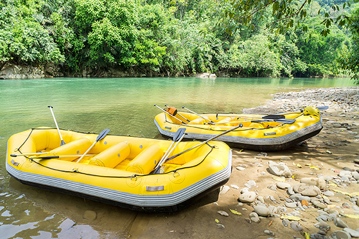

At Wild River Adventures, we believe every rapid tells a story. Our expert guides lead thrilling, safe, and unforgettable journeys down the region's most exciting rivers. Adventure isn't just what we do — it's who we are.

At Wild River Adventures, we believe every rapid tells a story. Our expert guides lead thrilling, safe, and unforgettable journeys down the region's most exciting rivers. Adventure isn't just what we do — it's who we are.
Wild River Adventures was founded in 1998 by a small group of river guides who wanted to share their love of the outdoors with the world. What started as a single raft and a handful of loyal customers has grown into one of the region's most trusted white water rafting outfitters.

Today we guide thousands of adventurers safely down the rapids every year. Our guides are trained in wilderness first aid and swift-water rescue, and our fleet of rafts is inspected before every trip so you can focus on the thrill of the ride.


